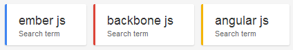
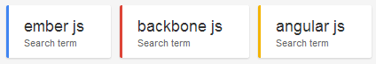

Javascript Framework
Created by Ahmad Fanaei
What's Included?
- Why we need client-side framework?
- Why they call it MVW?
- Who are the big ones?
- Which one is better?
- How to start?
- Let's get our hands dirty
Why we need client-side framework
Javascript good parts
- Functional programming
- Loose typing
- Prototype inheritance
- Object literal notation
- Asyncrnous
- All browser support
- No installation needed
Why we need client-side framework
Javascript bad parts
- Global variables
- Scopes
- Old browsers
- Callbacks (sometimes)
- Testing
- There is no structure
Why they call it MVW
- Smalltalk-80 MVC pattern (1979)
- MVC (Model View Controller)
- MVP (Model View Presenter)
- MVVM (Model View Viewmodel)
Further reading: Learning javascript design patterns

it came out at june 2010 and is the one of the oldest.
Many popular applications use the Backbone framework, including Twitter, Times, Foursquare, and LinkedIn Mobile.
Pros:
- Has a big community
- Easy learning
- Flexible
Cons:
- Have to write every thing
- No data-binding by default
- Its not clear how to structure code
realised in 2011, one of core members is old ruby programmer Yehuda Katz
LivingSocial, Groupon, Zendesk, Discourse, and Square are some of the most well-known applications that have adopted Ember.
Pros:
- Two way data binding
- Run loop
- Quite fast
Cons:
- Very hard to learn and bad documentation
- Younger than others
- Has the biggest size

realised in 2009, but hasn't a lot of attention until 2011. It's the framework of Google.
Almost all of google products including youtube. also Guardian, the Huffington Post, and MSNBC use this framwork.
Pros:
- 3D!
- Testing
- It’s the framework of Google
Cons:
- It uses dirty checking for binding
- It is quite slower than ember
- Learning is hard but different from ember
Which one is better
let numbers speak
- Backbone: 14191 questions, 3.8k followers
- Ember: 8816 questions, 1.4k followers
- Angular: 31014 questions, 6.4k followers
Which one is better
let numbers speak
 

Which one is better
- If you want something magical go for ember
- If you have big application and you want it to work use angular
- If your application is small and you want something to learn fast use backbone
Further reading: A journey to Javascript MVC jungle
ToDo MVC

- Compare different MV*
- A good starting point
- Help you select framework that suits you best.

- It’s a scaffolding tool
- Creates project structure
- Does some boilerplate staff
- Works good with grunt and bower